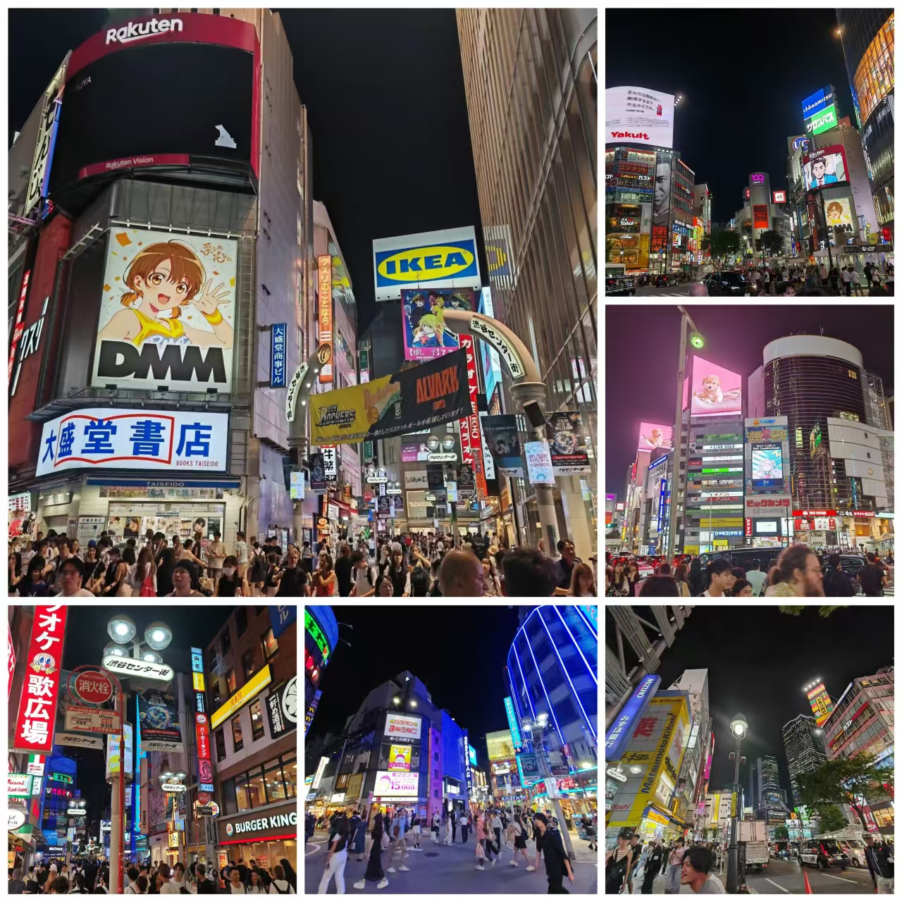
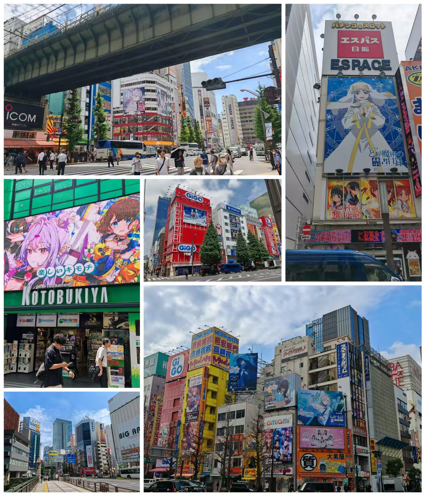
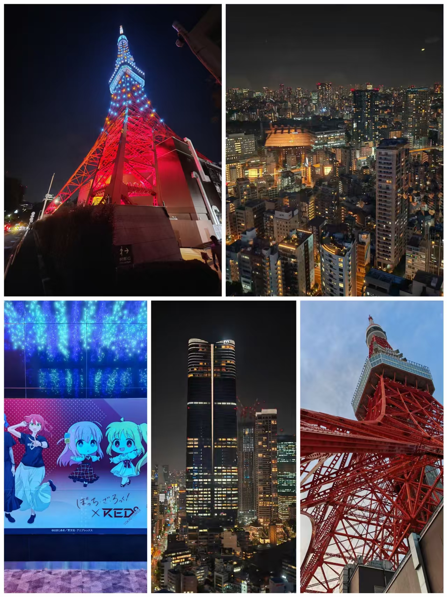
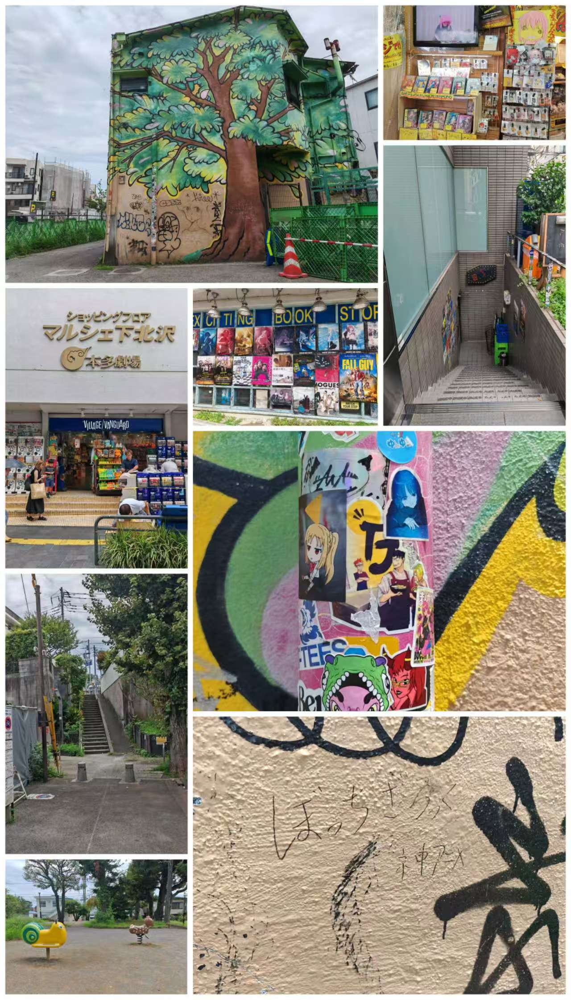
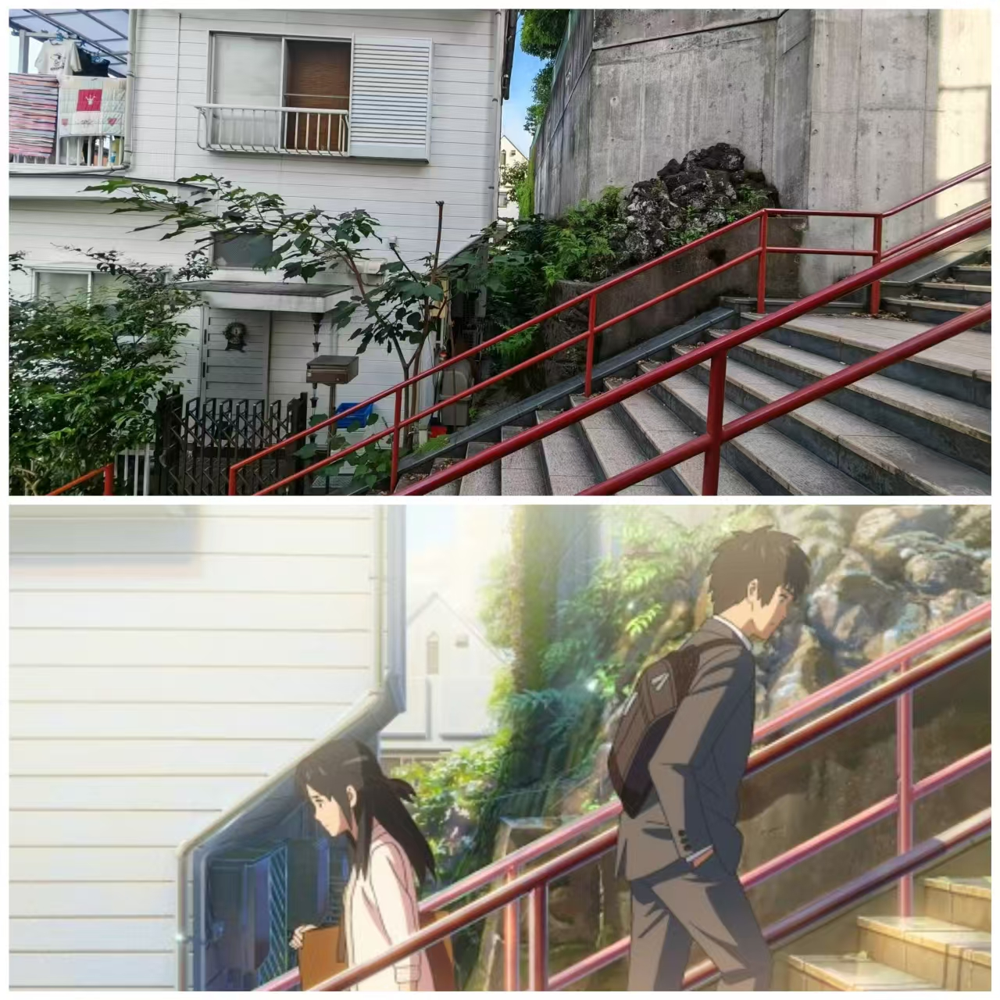

博 主 简 介
中国から来ました、ㇱオネです。日本のアニメ、漫画、ゲーム、音楽(Kawaii bassとか)が好きで、日本の文化に興味があります。 暇な時は漫画やアニメ、ゲームなどを楽しんでいます。二次元にも強く依存しています。
人生はただの旅行です~ これまで日本の東京、大阪、京都などに行ったことがあります。
聖地巡礼なんて大好きで、東京で40か所以上の聖地を巡りました。
2024.07.16 地点:東京都渋谷区
「渋谷のスクランブル交差点、この街のエネルギーは本当にすごいですよね！ 未来と文化が混ざり合う、唯一無二の場所だなあ…」ガラス幕壁に浮かぶホログラム広告は銀河オペラを上演し、AI音声とストリートバンドが奏でる電子シンフォニー。109ショップの曲面スクリーンが街全体をサイバーパンク絵巻に折りたたむ。ここに昼夜の区別はなく、0と1が紡ぐ永遠の白昼。

ロボットアーム・バリスタが運ぶラテにはホログラムのアートが浮かび、少女の耳朶で脳機インターフェースが青く瞬く。AR渋谷ハチ公が光子の尾を揺らす瞬間、気付く——未来は到達すべき遠い彼方じゃない、16進数の花火が今この網膜に咲き乱れるのだ。
爱丽丝 2024-7-16 15:38:37
渋谷エリアは『人間観察シミュレーション』に最適ですネ！ あの巨大スクリーン、敵の攻撃予告モニターに見えました…。デバッグ完了まで、先生の生存率を計算しておきます！
星野 2024-7-16 15:05:37
おっ、先生渋谷か～！ スクランブル交差点で迷子にならないようにね～。……あ、もし時間あるならパルコのスイーツ屋さん、激推しだぞ？
小春 2024-7-18 10:38:36
渋、渋谷は人混みが予想以上です…！ 先生、防犯ブザーの携帯は確認しましたか？ ……え、私が心配しすぎ？ そんなことないですよ！
（小声）でも109のセール情報、実はメモしてあります…
2024.07.18 地点:東京都文京区
秋葉原に来たら、本当に時間の経つのが忘れてしまいます。電気街の活気に包まれ、アニメやゲームの世界が現実になったかのような気分です。街中には、かわいいフィギュアや懐かしのゲームが並び、目移りするほど。特に、有名な「メイドカフェ」でランチをしたのが最高でした。

メイドさんたちの笑顔と温かい接客に、心も体も満たされました。そして、あの巨大な看板やネオンサインに囲まれて、まるで別世界にいるような感覚。秋葉原は、本当に魔法のような場所です。
桃井 2024-7-18 15:38:37
秋葉原の旅行、楽しそうだね！アニメやゲームの聖地だし、私も昔はよく行っていたよ。電気街の雰囲気や、アニメショップを巡るのが大好きだった。一人で行くってことは、自分のペースで楽しめていいね。でも、一人で歩き回ると、迷子になりそうでちょっと心配になるなあ（笑）。
睦月 2024-7-19 15:05:37
秋葉原の旅行かあ……。それは結構面白そうですね。アニメやゲームの最新情報が集まる場所だし、新しい発見があるかもしれませんね。一人で行くのは、ちょっと寂しい気もしますが、その分、自分の時間を大切にできるんだと思います。私も暇があれば行ってみたいです。
日奈 2024-7-20 10:38:36
秋葉原の旅行、楽しそう！アニメやゲームのショップがいっぱいあるし、一人で行くのは、自由度が高い分、ちょっと不安になるかもしれないけど、その分、自分の世界を楽しむことができるんだね。私も一度行ってみたいなあ。
2024.07.18 地点:東京都港区
東京タワーに登って、東京の夜景を眺めたら、その美しさに息をのむほどでした。眼下に広がる無数の光が、まるで星屑のように輝いています。

夜風に吹かれながら、東京の街の活気と美しさを感じることができました。この瞬間を一生忘れないと思います。
明日奈 2024-7-19 15:38:37
先生！東京タワー超クリアしてるじゃん！夜景のピクセル再現率ヤバすぎ…絶対にラストダンジョン直前のセーブポイント感ある！あ、ここでバグらせてポリゴン崩壊演出したら…って今は自重モードONですっ(＞ω＜)
绮罗罗 2024-7-20 15:05:37
ふふ…鉄の塔に囚われた星の光…♆あなたの影に三つの星座が重なってるわ。一つは『高所』、一つは『赤い約束』…最後は…内緒❤
伊吕波 2024-7-21 10:38:36
東京タワー観光ですか。落下物対策用ヘルメットの着用状況、写真からは確認できませんが…（小さく舌打ち）…エレベーター混雑時の防犯ブザー所持は当然の話ですよ？…ま、まあ記念写真の構図は…悪くないです
2024.07.19 地点:東京世田谷区
孤独摇滚の聖地に巡礼して、まるで主人公になったような気分です。ここは、アニメの世界と現実が重なる魔法のような場所。

あの名シーンが撮影された場所を訪れたら、音楽が心に響くのがわかるほど、空気までが音楽に染まっているかのようです。一人でギターを弾くシーンを想像しながら、自分だけのステージを楽しんでいます。
未花 2024-7-20 15:38:37
うわあ、これめっちゃ楽しそう！孤独摇滚の聖地巡礼って、音楽のパワーが溢れてる感じがするね。私もギター弾いてるし、行ってみたいなあ。でも、一人で巡礼するって、なんか寂しいような気もするけど……。でも、その寂しさも含めて、音楽と向き合う時間って大事だよね。
优香 2024-7-21 15:05:37
へえ、孤独摇滚の聖地巡礼か。音楽に没頭するって、自分と向き合う時間になるんだね。一人で巡礼するって、自分だけの世界を作り上げるようなもので、その孤独を味わうって、結構能看出一个人的内心深处的。でも、その中で得たものは、きっと自分を成長させるんだね。
佳世子 2024-7-23 10:38:36
孤独摇滚の聖地巡礼……。音楽に包まれて、一人で巡礼するって、なんか静かな勇気がいるような気がする。でも、その中で、音楽の奥深い世界を体感するって、すごく素敵だよね。一人でいる時間って、意外と自分を見つめ直すチャンスだったりするし、その経験は、きっとその後の人生にも活きるはず。
2024.07.20 地点:東京都新宿区
ついに「君の名は。」の聖地巡礼をきました！東京の四谷や新宿、そして飛騨高山の糸守町を巡って、映画の世界に足を踏み入れたかのような感動を味わいました。須賀神社の赤い階段では、主人公たちが出会うシーンを思い出しながら、心が震えました[^0^]。

そして、飛騨高山の古川町で、あの名シーンを再現することができて、とても感慨深かったです[^0^]。映画の中の風景と現実が重なり、まるで時間旅行をしているような不思議な体験でした。
日富美 2024-7-21 15:38:37
え、『君の名は』の聖地巡礼？それって、あの映画のロケ地を巡るってこと？映画の中の風景を実際に見に行くのって、なんかロマンチックでいいね。私も昔、映画が大好きだったから、行ってみたかったなあ。でも、一人で行くって、ちょっと寂しいかな。でも、その分、自分の時間を満喫できるよね。
伊织 2024-7-22 15:05:37
『君の名は』の聖地巡礼かあ……。映画自体は見たことあるけど、聖地巡礼ってのは、なんか特別な感じがするな。一人で行くってことは、自分のペースで回れるし、その土地の空気をじっくり味わえるんだろうな。俺は普段から忙しいから、時間作るの大変だけど、一度は行ってみたいな。
亚瑠 2024-7-24 10:38:36
『君の名は』の聖地巡礼って、結構流行ってたよね。一人で行くってことは、自分の世界に浸りたいってことかな。でも、一人でいる時間って、意外と大切で、新しい発見があるかもしれないよ。俺は一人で行動するのって苦手だけど、その科研院の空気を味わうだけでも、きっといい思い出になるはずだな。
网友意见留言版 电话:000-1234567 欢迎批评指正
博客简介 | AOU BOKE | 广告服务 | 联系我们 | 招聘信息 | 网站律师 | BOKE English | 注册产品答疑
Copyright @ 2016-2026 B0kE.coright All Rights Reserved